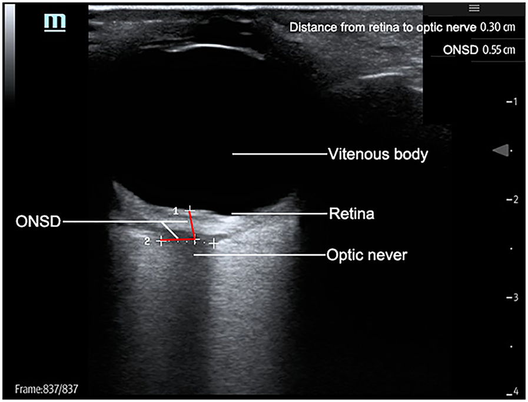

The optic nerve sheath is continuous with the subarachnoid space. Elevated ICP transmits to the sheath, causing dilation detectable on POCUS within minutes.
The widely taught ≤5 mm threshold is a convenient round number, not the most evidence-supported cutoff. A meta-analysis of 38 studies (2,824 patients) found optimal cutoffs across included studies ranged 4.1–7.2 mm, and meta-regression showed cutoffs of 5.6–6.3 mm achieved significantly higher specificity (0.93) than cutoffs of 4.9–5.5 mm (0.78, p=0.036).10 A separate analysis similarly found the highest sensitivity for elevated ICP at cutoffs >6 mm.11 A more recent meta-regression focused on traumatic brain injury found more modest pooled performance in adults (Sn 0.88, Sp 0.76), reflecting real operator- and modality-dependent variability.12 Practical takeaway: treat 5 mm as a sensitive screening trigger, but recognize that values in the upper 5s to low 6s carry more diagnostic weight, and don’t treat ONSD as a binary, fully validated test.
Bilateral dilation + clinical signs (Cushing’s triad, anisocoria) supports urgent ICP management. Serial ONSD can track response to hyperosmolar therapy. ONSD is a rapid screen, not a substitute for CT — may guide osmotherapy initiation before imaging is available.
